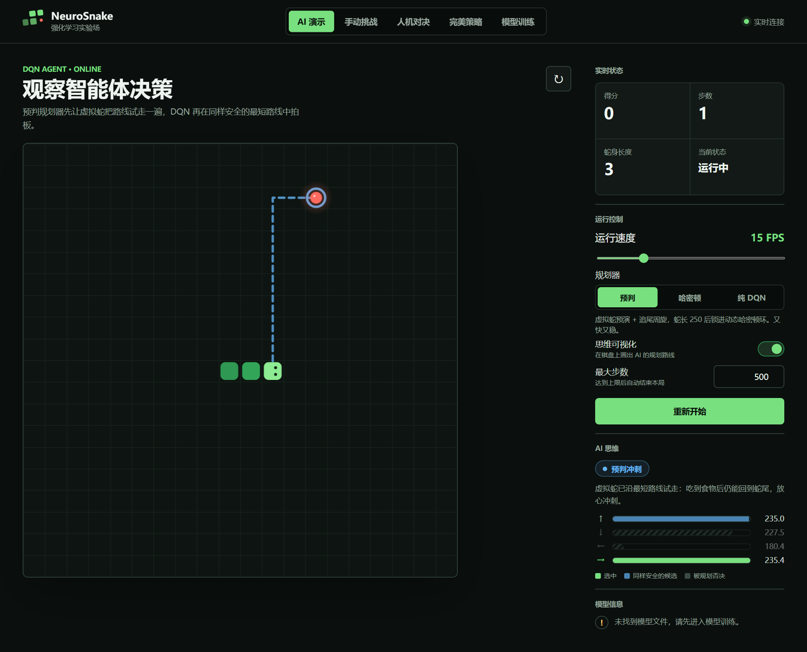
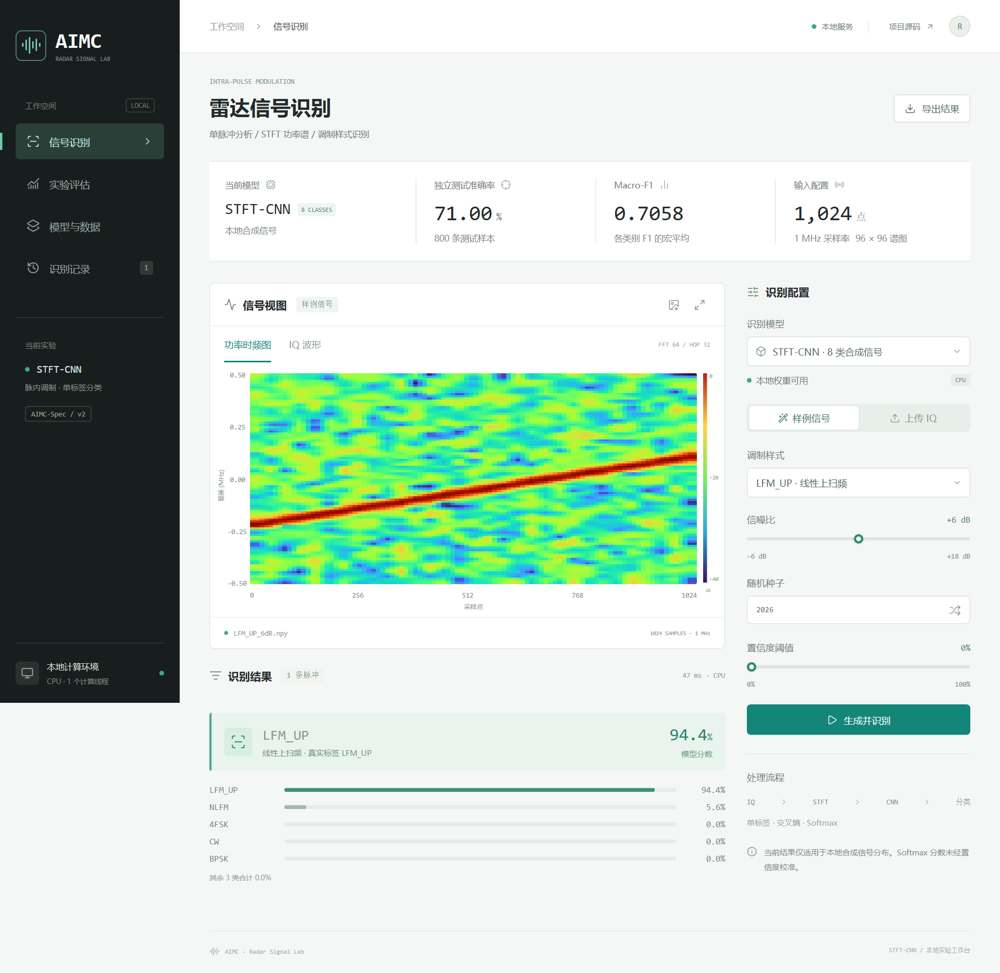
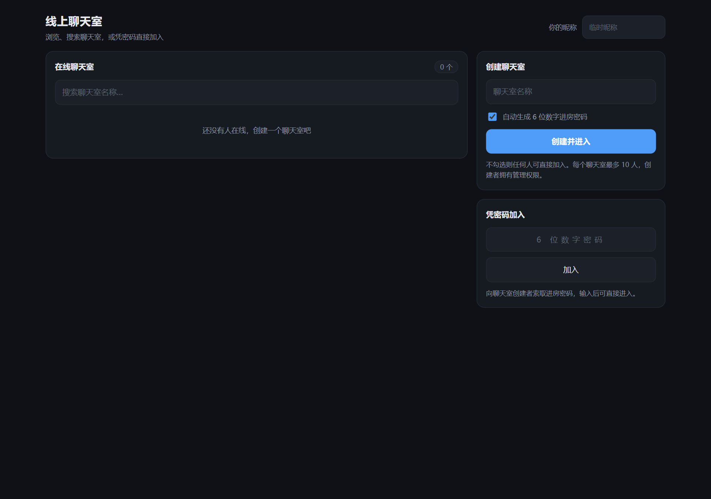
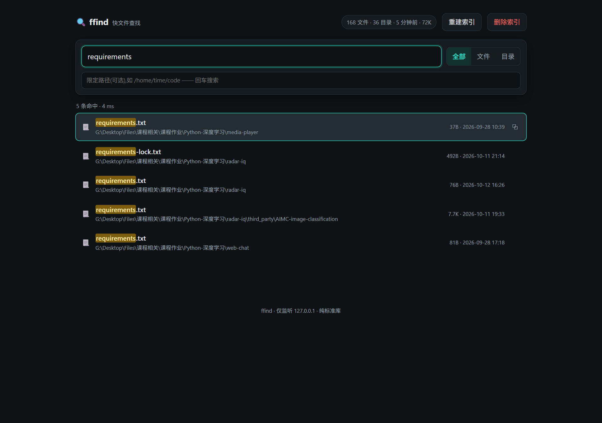
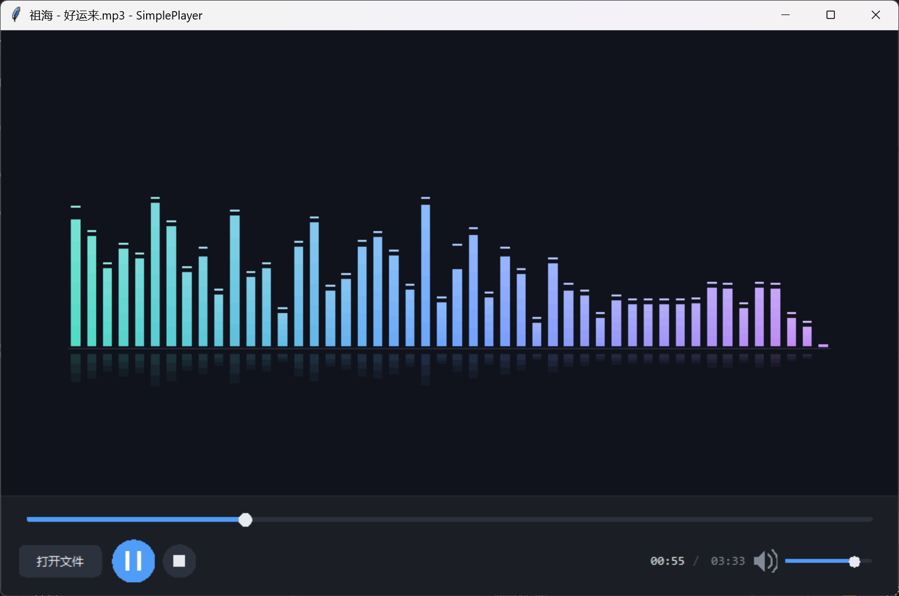

01
状态表示与价值网络
| 状态信息 | 维度 | 含义 |
|---|---|---|
| 食物相对位置 | 2 | 归一化的横向、纵向距离 |
| 四向危险 | 4 | 上、下、左、右是否会碰撞 |
| 当前朝向 | 4 | 用独热编码表示移动方向 |
10状态→64隐藏层→64隐藏层→4方向 Q 值
Q(s, a) 估计在状态 s 采取动作 a 后的累计折扣奖励。吃到食物获得正奖励，碰撞受到惩罚，模型由此学习方向的长期价值。
五个独立项目的技术方案、实现方法与实验结果。
涵盖强化学习、信号分类、Web 服务及桌面应用。
用 DQN 学习动作的长期收益，再由安全规划筛选可行方向，每走一格重新判断。
| 状态信息 | 维度 | 含义 |
|---|---|---|
| 食物相对位置 | 2 | 归一化的横向、纵向距离 |
| 四向危险 | 4 | 上、下、左、右是否会碰撞 |
| 当前朝向 | 4 | 用独热编码表示移动方向 |
Q(s, a) 估计在状态 s 采取动作 a 后的累计折扣奖励。吃到食物获得正奖励，碰撞受到惩罚，模型由此学习方向的长期价值。
用时间感知 BFS 寻找食物路线，考虑蛇尾逐步让路。让虚拟蛇试走，检查吃完后是否仍能通向蛇尾；蛇较长时还检查空白区域连通性。
直接吃食不安全时，优先保留能通向蛇尾、可活动空间较完整的方向，等待身体移动后释放通道。
蛇较长或长时间未吃到食物时，尝试构建覆盖棋盘的闭合环。成功后保持蛇身沿环的顺序，并在安全范围内寻找捷径。
经验回放 + Double DQN存储“状态、动作、奖励、新状态”，随机抽取经验训练。在线网络选动作，目标网络估值，以 Huber 损失修正预测，减少连续样本相关性与价值高估。
安全候选筛选 + 最大 Q 值选择加载已训练权重，关闭随机探索，也不再更新网络。多个候选时由 DQN 排序；只剩一个候选则直接执行，下一格继续判断。
DQN 只接收 10 维局部状态，全局路线由规划器读取完整棋盘计算。默认表现来自二者配合；关闭规划仍保留单步合法动作过滤。Q 值是收益估计，不是成功概率。

将 IQ 脉冲转换为时频图，利用卷积网络学习频率轨迹与调制类别之间的对应关系。
x[n] = I[n] + jQ[n]I、Q 为相互正交的两个分量，共同表示信号的幅度与相位。| 处理步骤 | 实现参数 | 作用 |
|---|---|---|
| 分帧加窗 | Hann 窗 64 点 步长 32 点 | 在滑动的短时间段内分析信号 |
| 傅里叶变换 | 64 点 FFT | 得到每个时间段的频率分量 |
| 功率映射 | |STFT|² → dB | 将各频率的能量分布转成图像强度 |
按每帧最大功率映射 40 dB 动态范围，再缩放为 96 × 96。时频图横轴为时间、纵轴为频率，亮度表示相对功率，保留频率随时间变化的轨迹。
卷积提取局部纹理，池化汇总邻域特征，自适应池化统一到 7 × 7 后送入全连接层。模型从带标签的样本中学习纹理与类别的对应关系。
| 信号示意 | 时频轨迹 |
|---|---|
CW 单频 | 近似水平的频率线 |
LFM 线性调频 | 上升或下降的斜线 |
FSK 频移键控 | 在离散频率间跳变 |
输出各类别得分，经 Softmax 转为相对分数，取最高分对应的调制样式。以上轨迹用于解释特征，实际分类由训练后的网络完成。
时频图 + 真实类别 → 交叉熵损失通过反向传播调整卷积与分类层参数，按验证集损失保存权重，最后用留出的测试集评估。合成模型与官方模型使用不同的类别集合和输入配置。
8 类：1024 点 / 1 MHz
30 类：1000 点 / 50 MHz加载对应权重，保持训练与推理的预处理一致。输入格式统一为 I、Q 两通道；拒绝全零、非有限值或长度不匹配的数据，不在识别时继续训练。
8 类合成测试准确率为 71.00%，官方 30 类小样本为 7.61%，后者仅用于流程演示。Softmax 分数未经置信度校准，最高分不代表一定正确，也不能据此保证未知信号可被可靠识别。

面向反向代理与单端口部署，采用标准库 HTTP 服务与增量消息同步。
房间列表 / 密码加入 / 成员管理
静态页面 + JSON API / 单端口托管
pollBusy 保证同一时刻只有一个请求在途，pollAgain 记录需要补拉的状态。
维护已渲染消息 ID 集合，同一批响应重复到达时只追加一次。
响应先比对 owner 引用，房间切换后整包丢弃旧会话的过期数据。

以完整路径组织文件记录，通过文件名联合索引加速检索，数据保存在本地 SQLite 数据库中。
files| 字段 | 类型 | 作用 |
|---|---|---|
path主键 | TEXT | 完整路径，区分同名文件 |
name | TEXT | 文件名，使用 NOCASE 比较规则 |
is_dir | INTEGER | 0 为文件，1 为目录 |
WITHOUT ROWID 直接以 path 主键组织表数据，省去额外的隐藏行号结构。NOCASE 默认处理 ASCII 大小写。
files_nameCREATE INDEX files_name
ON files(name, path);notes.txt…/docs/notes.txtreport.pdf…/course/report.pdfreport.pdf…/work/report.pdfreport_1.pdf…/work/report_1.pdfname LIKE 'report%'利用 B-tree 的有序结构，定位到一段连续索引范围，减少需要检查的条目。
name LIKE '%report%'通常仍需扫描候选条目，不能获得与前缀查询相同的范围定位加速。
当前查询还会读取 is_dir，而 (name, path) 索引不包含该字段，因此不能保证全程只读索引、不回表。

基于 Tkinter 自绘界面与 FFmpeg 解码，实现音视频播放、整窗拖放与实时音频频谱。
_ready 根据元数据判断是否可安全取时间，避免文件尚未打开时调用底层接口。
_scrubbing 标记临时取帧过程，获取目标帧后恢复暂停，更新静止画面。
按目标时间戳丢弃旧帧，以 frame_pts 驱动进度显示，减少画面与进度错位。

围绕算法、数据、状态与环境，归纳五个项目的实现方法与体会。
DQN 估计动作的长期收益，规划器检查完整棋盘上的路线。把模型判断与安全约束分开，才能分别评估两者的作用，也能解释每一步的选择。
训练和推理保持相同的采样率、脉冲长度与时频处理。分别评估合成信号和官方信号，保留独立测试集；说明数据来源及实验条件，避免过度解读小样本结果。
切换房间时丢弃旧响应、避免重复消息；暂停、定位和切换媒体时明确状态与后台任务的归属。重点验证快速切换、重复操作和播放结束后的行为。
优先复用已有 FFmpeg 完成解码与频谱分析。文件查找器调用系统文件管理器，并确保文件结果只打开所在目录；在实际系统中检查启动、异常反馈与资源释放。
交付经验明确输入与状态 → 验证功能与边界 → 整理启停与复现步骤